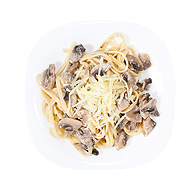

«Болтунья» по-вегетариански 45 мин.
Жареный сыр с помидорами
Способ приготовления
Порежьте сыр на крупные кусочки. Разомните их вилкой.
Нагрейте гхи или растительное масло в толстодонной сковороде, насыпьте семена кумина и, как только они потемнеют, примерно через 30 секунд, добавьте сыр. Приправьте куркумой, солью и перцем. Перемешайте и жарьте 2—3 минуты на среднем огне, периодически помешивая.
Помидоры залейте кипятком и через 2 минуты снимите с них кожицу. Порежьте их на крупные кубики и добавьте в сковороду к сыру. Продолжайте жарить на среднем огне с открытой крышкой и помешивать, пока большая часть влаги не испарится, это займёт примерно 15—20 минут.
По желанию перед подачей содержимое сковороды можно залить сметаной и перемешать.
Подавайте горячим, украсив кинзой или петрушкой.
Время приготовления — 45 минут
За основу взят рецепт из книги Адираджа даса Ведическое кулинарное искусство
С этим блюдом можно приготовить
-

Салат с рукколой и редисом 15 мин.
Смотрите также
-

Паста по-сицилийски 50 мин.
Макароны в сливочно-грибном соусе
-
.jpg)
Спаржа в сливочном соусе 30 мин.
-
.jpg)
Роллы с овощами 2 часа
С огурцом, авокадо и болгарским перцем
© Антифлеш, 2022